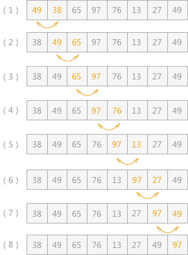

冒泡排序（起泡排序）算法及其C语言实现
起泡排序，别名“冒泡排序”，该算法的核心思想是将无序表中的所有记录，通过两两比较关键字，得出升序序列或者降序序列。
例如，对无序表
如图 1 所示是对无序表的第一次起泡排序，最终将无序表中的最大值 97 找到并存储在表的最后一个位置。具体实现过程为：
由于 97 已经判断为最大值，所以第二次冒泡排序时就需要找出除 97 之外的无序表中的最大值，比较过程和第一次完全相同。

经过第二次冒泡，最终找到了除 97 之外的又一个最大值 76，比较过程完全一样，这里不再描述。
例如，对无序表
{49，38，65，97，76，13，27，49}进行升序排序的具体实现过程如图 1 所示：

图 1 第一次起泡
如图 1 所示是对无序表的第一次起泡排序，最终将无序表中的最大值 97 找到并存储在表的最后一个位置。具体实现过程为：
- 首先 49 和 38 比较，由于 38<49，所以两者交换位置，即从（1）到（2）的转变；
- 然后继续下标为 1 的同下标为 2 的进行比较，由于 49<65，所以不移动位置，（3）中 65 同 97 比较得知，两者也不需要移动位置；
- 直至（4），97 同 76 进行比较，76<97，两者交换位置，如（5）所示；
- 同样 97>13（5）、97>27（6）、97>49（7），所以经过一次冒泡排序，最终在无序表中找到一个最大值 97，第一次冒泡结束；
由于 97 已经判断为最大值，所以第二次冒泡排序时就需要找出除 97 之外的无序表中的最大值，比较过程和第一次完全相同。
经过第二次冒泡，最终找到了除 97 之外的又一个最大值 76，比较过程完全一样，这里不再描述。
起泡排序的具体实现代码为：通过一趟趟的比较，一个个的“最大值”被找到并移动到相应位置，直到检测到表中数据已经有序，或者比较次数等同于表中含有记录的个数，排序结束，这就是起泡排序。
#include <stdio.h>
//交换 a 和 b 的位置的函数
void swap(int *a, int *b);
int main()
{
int array[8] = {49,38,65,97,76,13,27,49};
int i, j;
int key;
//有多少记录，就需要多少次冒泡，当比较过程，所有记录都按照升序排列时，排序结束
for (i = 0; i < 8; i++){
key=0;//每次开始冒泡前，初始化 key 值为 0
//每次起泡从下标为 0 开始，到 8-i 结束
for (j = 0; j+1<8-i; j++){
if (array[j] > array[j+1]){
key=1;
swap(&array[j], &array[j+1]);
}
}
//如果 key 值为 0，表明表中记录排序完成
if (key==0) {
break;
}
}
for (i = 0; i < 8; i++){
printf("%d ", array[i]);
}
return 0;
}
void swap(int *a, int *b){
int temp;
temp = *a;
*a = *b;
*b = temp;
}
运行结果为：
13 27 38 49 49 65 76 97
总结
使用起泡排序算法，其时间复杂度同实际表中数据的无序程度有关。若表中记录本身为正序存放，则整个排序过程只需进行 n-1（n 为表中记录的个数）次比较，且不需要移动记录；若表中记录为逆序存放（最坏的情况），则需要 n-1趟排序，进行 n(n-1)/2 次比较和数据的移动。所以该算法的时间复杂度为O(n2)。关注公众号「站长严长生」，在手机上阅读所有教程，随时随地都能学习。内含一款搜索神器，免费下载全网书籍和视频。

微信扫码关注公众号